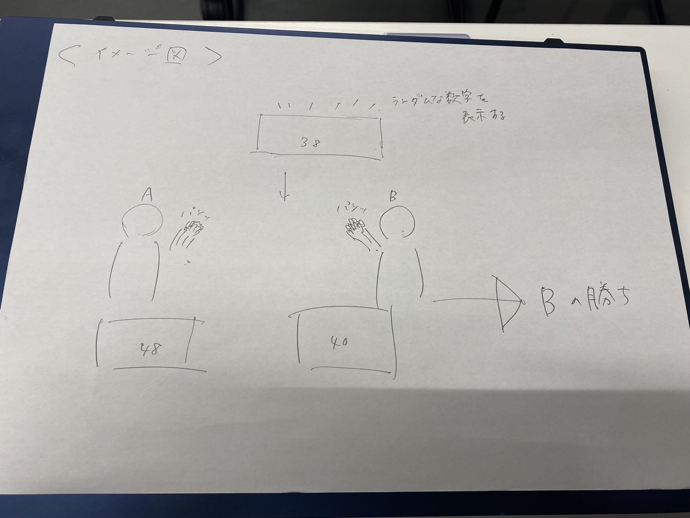
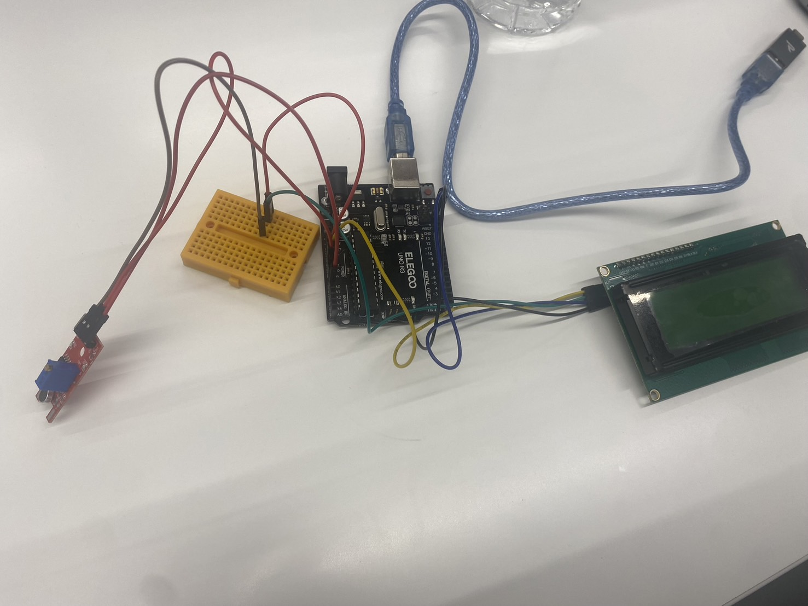
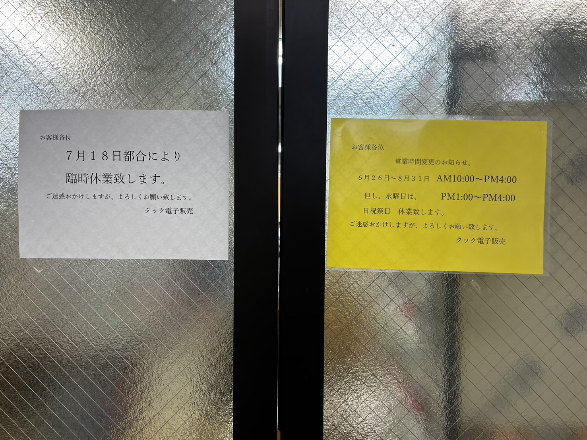
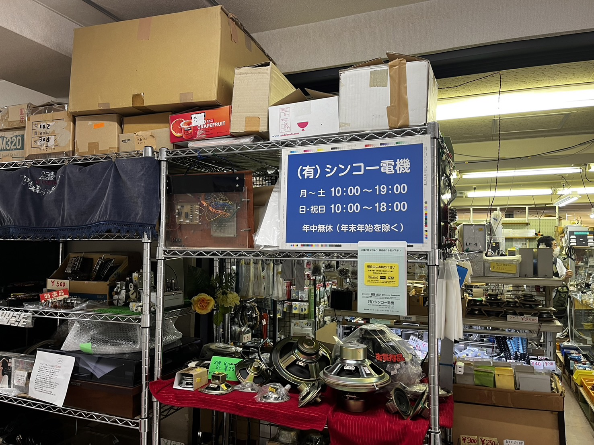

案（2024/05/27
カーテンを自動で開けて自分を起こしてくれるもの

必要なもの:タイヤ、モーター、レール、アーム、aruduino、吊り下げ機
購入品:
モーター類
タイヤは当初購入しようと考えていたが3Dプリンタで製作しようと考え中（TPUなどを使って
実行予定のaruduinoスケッチ
#include
const int stepsPerRevolution = 2048; // モーターのステップ数（28BYJ-48の場合）
// 4つの制御ピン
Stepper myStepper(stepsPerRevolution, 8, 10, 9, 11);
void setup() {
// モーターの速度設定
myStepper.setSpeed(15); // RPM（回転数）
// シリアル通信の開始
Serial.begin(9600);
}
void loop() {
// 1回転（時計回り）
Serial.println("clockwise");
myStepper.step(stepsPerRevolution);
delay(1000);
// 1回転（反時計回り）
Serial.println("counterclockwise");
myStepper.step(-stepsPerRevolution);
delay(1000);
}
新プロジェクト
カーテンの案は電源の品番が見つからず一旦断念し、いまは別の案を行っています。
それはマイクセンサーとディスプレイを使って音を表示し、それに一番近い音を手をたたく音で出した人
が勝ちというゲームを考えています。このゲームはいろんな遊び方があるのですがまずはこの遊び方を作って
いこうと考えています。
使用したもの

※イメージ図
追記
難解であったため一人で遊ぶ前提でターゲット音に±2dBを2秒間維持出来たらクリアのゲームに変更した。
しかし音声センサーがうまく音を拾ってくれず惜しくも断念。

三つ目の案
Google calender APIを利用してGoogle calenderの曜日や予定によってaruduinoと接続したLEDライトが
光るというもの
実際は、wifiモジュールがうまく接続できず、これも断念
四つ目の案「aruduinoでLチカさせてスロットのようなものを作ってみた
今回aruduinoでLチカを七つ作ってそれをみっつ用意することでスロットのようなあそびができるものをつくってみました。
材料確保のためフィールドワークとして二つの電子部品店に行きました

初期段階
この段階ではLEDが四つしか点灯しませんでした。
完成品
ここで全てのLEDが点灯しました。仕組みとしてはボタンを押すとLEDが点滅をくりかえし、再度ボタンを押すと
いずれかが点灯するという仕組みになっています。点滅の仕方は二通りあり楽しめる形になっています。この作品は目押しの練習をコンセプトとしています。